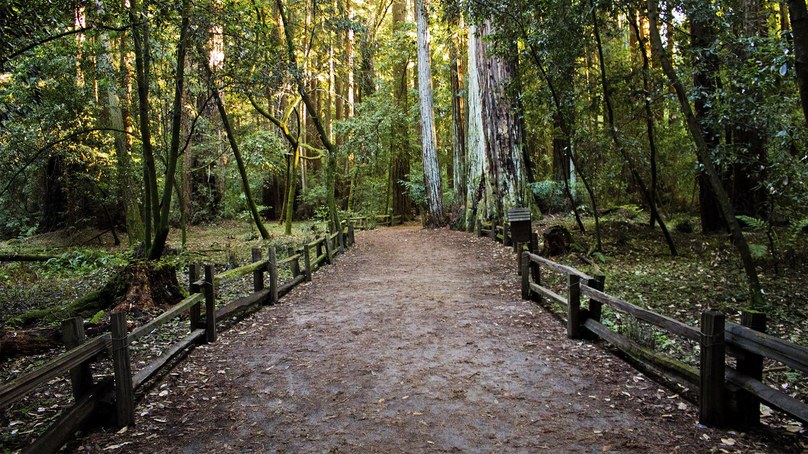

Sobre mim
Meu nome é Guilherme tenho 21 anos sou de Ibicaraí BA, além de programar também gosto de fazer exercícios físicos como meu hobbie principal é a academia, no começo foi um pouco difícil mas, quando eu aprendi a gostar quando eu comecei a ver resultados assim pude notar se eu focar e me dedicar em algo eu posso obter resultados incríveis e atualmente eu estou tentando incluir trilhas como outro hobbie.
Além da academia também gosto um pouco da culinária, e atualmente estou aprendendo sobremesas acho que é uma ótima maneira de passar o tempo e esfriar a cabeça quando se tem um dia difícil.
Desde pequeno sempre gostei de jogos eletrônicos e sempre quis entender como eles desenvolviam e criavam eles e com isso descobri que na área da tecnologia existe coisas mais interessantes do que entretenimento é a capacidade de criar algo do zero como sites, aplicativos ou até mesmo o meu próprio jogo e por isso busquei essa graduação.
Formação Acadêmica
- Curso: Baicharelado em Engenharia de Software
- Instituição: Uninter
- Ano de Inicio: 2024
- Curso: Inglês
- Instituição: Uninter
- Ano de Inicio: 2024
- Português: Fluente
- Inglês: Nível Intermediario
Idiomas
Portifolio
Contato
Nome:
Guilherme Campos Ferreira
Email:
guilhermefer1128@gmail.com